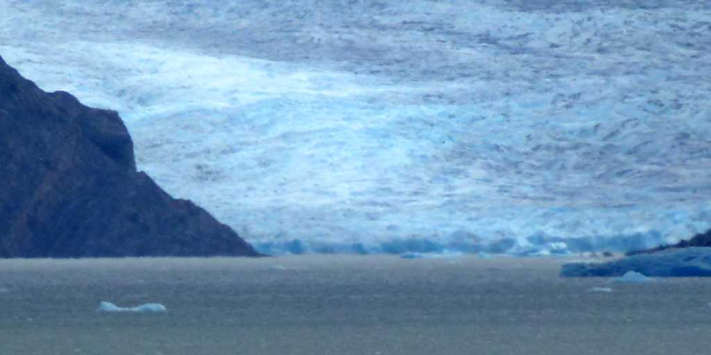
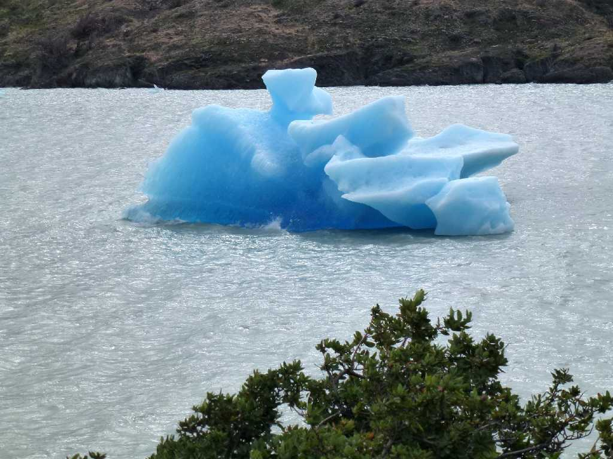
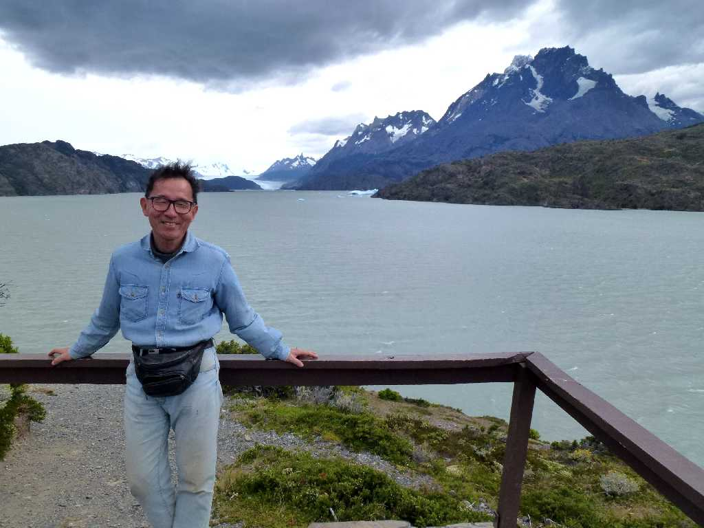

Glaciar Gray Lago Gray Parque Nacional Torres del Paine
トレスデルパイネ国立公園にある長さ２８㎞幅６㎞の美しいい氷河

Lago Gray Parque Nacional Torres del Paine
グレイ湖に浮かぶ氷山

February 17 2014 Lago Gray Parque Nacional Torres del Paine